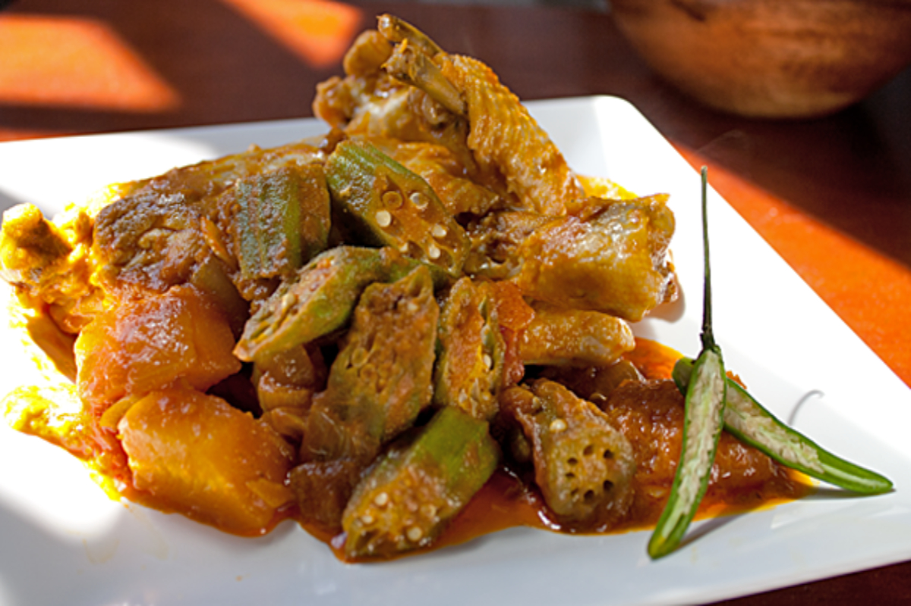
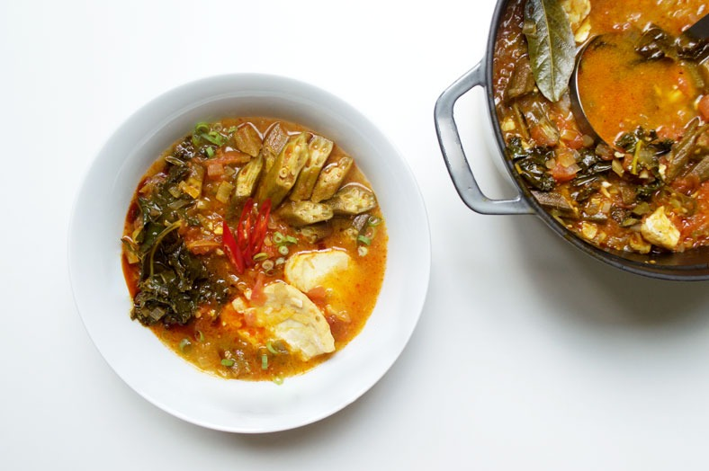
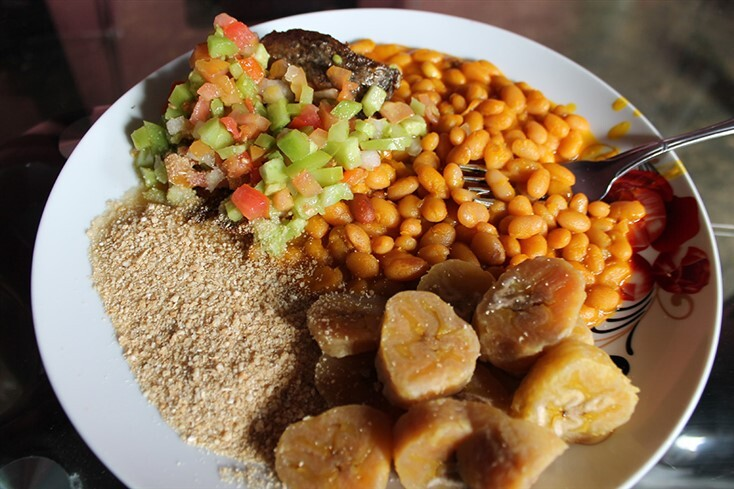
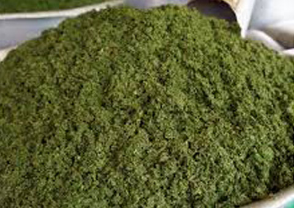

Nossos Pratos Emblemáticos
Descubra os pratos que fazem do Yala Nkwu uma referência na culinária tradicional angolana, onde cada receita é um tesouro cultural preservado com amor e respeito.
Funge
O funge é o acompanhamento tradicional mais importante da culinária angolana. Preparado com fubá de mandioca ou milho, tem consistência cremosa e é a base perfeita para acompanhar quase todos os pratos tradicionais.
No Yala Nkwu, preparamos nosso funge seguindo a técnica ancestral: mexido continuamente em panela de ferro até atingir a textura aveludada característica que faz toda a diferença na experiência gastronômica.


Muamba de Galinha
Frango desfiado em molho rico de óleo de palma, servido com funge. Prato cerimonial que representa hospitalidade e celebração.

Calulu de Peixe
Peixe seco cozido com legumes e óleo de palma. Sabor intenso que remete às tradições costeiras.

Mufete
Peixe grelhado (geralmente cacusso ou peixe do mar) servido com feijão de óleo de palma, banana-pão cozida, mandioca e batata-doce. Prato tradicional angolano muito apreciado em encontros familiares e celebrações, representando partilha e convivência.

Kizaca
Folhas de mandioca cozidas com peixe seco. Prato nutritivo e profundamente tradicional das zonas rurais.

Pirão de Marisco
Caldo de marisco engrossado com fubá, servido com camarões e lulas. Sabor marítimo intenso e textura cremosa.
Combinações Tradicionais
Bebidas Tradicionais
Palm Wine
Vinho de palma tradicional, fermentado naturalmente.
AOA 2.500Suco de Maracujá
Fresco e natural, servido gelado.
AOA 1.800Café Angolano
Café forte e aromático, tradicional de Angola.
AOA 1.200Quissangua
Bebida fermentada tradicional de milho.
AOA 2.200Benefícios Nutricionais
Rico em Nutrientes
Nossos pratos são fontes de vitaminas, minerais e antioxidantes essenciais para a saúde.
Alta Energia
Ingredientes como mandioca e óleo de palma fornecem energia sustentada para o dia todo.
Imunidade
Especiarias e ingredientes naturais fortalecem o sistema imunológico e combatem inflamações.
Saúde Mental
Alimentos tradicionais promovem bem-estar e conexão com as raízes culturais.